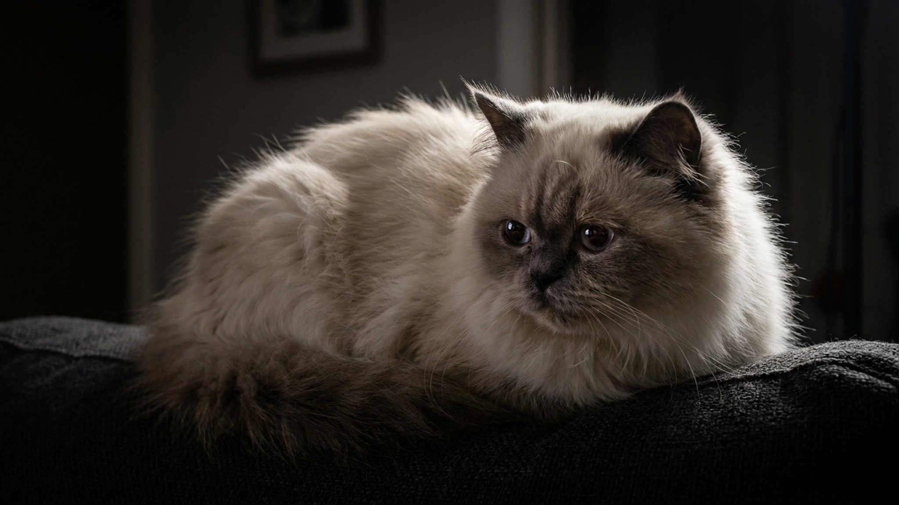

Мордочка как у перса, а лапы, уши и хвост — тёмные, будто кошку окунули в краску: это фирменный колор-пойнт. Гималайская кошка — не древняя порода из-под Гималаев, а рукотворный гибрид, и за эту внешность приходится платить ежедневным уходом. Ниже — характер, шерсть и слабое место, о котором заводчики говорят неохотно.
🐾 Экономьте на лишних визитах к врачу
Сначала спросите AI-ветеринара в AnimaLife — часто этого достаточно, чтобы понять, нужен ли визит к врачу.
Гималайская кошка появилась в середине XX века, когда заводчики скрестили персидскую кошку с сиамской. Цель была одна — получить пушистого перса с контрастным сиамским окрасом и голубыми глазами. Название к горам отношения не имеет: так называют этот тип окраса, как у гималайского кролика.
В части стандартов гималайская кошка считается отдельной породой, в других — окрасной разновидностью перса. На практике это перс по строению тела и характеру, а от сиама достались только цвет и яркая голубизна глаз.
Если ждёте сиамской болтливости и шила в одном месте — гималайская кошка удивит. Темперамент она взяла персидский: спокойная, ласковая, тихая. Это классическая кошка-компаньон, которая выберет колени и мягкий плед, а не полку под потолком.
Главный труд с этой породой — шерсть. Длинный густой подшёрсток сваливается в колтуны буквально за пару дней, особенно за ушами, под лапами и на «штанишках». Пропустили неделю — и вычёсывать придётся уже с болью для кошки.
Что входит в базовый уход: ежедневное расчёсывание гребнем и пуходёркой, купание раз в 1–2 месяца, регулярное вычёсывание в период линьки. Длинная шерсть — это ещё и больше проглоченных волос, поэтому следите за грумингом и обсудите с ветеринаром пасту для вывода шерсти.
Вот о чём говорят неохотно: у гималайской кошки, как у перса, укороченная плоская морда. Из-за строения слёзных каналов глаза часто слезятся, а под ними появляются тёмные дорожки. Мордочку и уголки глаз протирают мягкой салфеткой ежедневно — это гигиена, а не лечение.
Сильно вздёрнутый нос иногда затрудняет дыхание и еду. Если берёте котёнка, выбирайте более «умеренный» тип с открытыми ноздрями, а любые проблемы с дыханием или обильным слезотечением показывайте ветеринару — средство и уход подбирает врач.
🐾 Всё о вашем питомце — в одном приложении
AI-ветеринар, дневник, напоминания о прививках и уходе. Установите AnimaLife — это бесплатно, в Telegram и MAX.
🐾 Понравился разбор?
Подпишитесь на канал — каждый день разбираем по одному тревожному симптому у кошек и собак: что в пределах нормы, а когда пора к врачу. Подпишитесь, чтобы не пропустить разбор, который может спасти здоровье вашего питомца.
Гималайская кошка — для того, кто готов к ежедневному грумингу и ценит спокойного домашнего компаньона. Активность у породы низкая, поэтому важны игры и контроль веса: ленивый пушистик легко полнеет. Берите котёнка у ответственного заводчика, смотрите на состояние глаз, дыхание и родителей.
Материал носит информационный характер и не заменяет очную консультацию ветеринара.